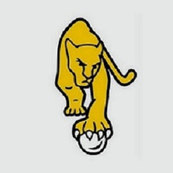

La selección femenina de hockey sobre césped de Argentina, también conocida como Las Leonas, representa a Argentina en las
competiciones organizadas por la Federación Internacional de Hockey y la Federación Panamericana de Hockey.
Viendo lo más importante en cuanto a títulos, Las Leonas obtuvieron dos Campeonatos Mundiales, siete Champions Trophy, una Liga Mundial, una Hockey
pro League, siete Juegos Panamericanos, seis Copas Panamericanas y tres Juegos Suramericanos, entre otros torneos. Además,
alcanzaron el podio de los Juegos Olímpicos en cinco ocasiones con tres medallas de plata y dos de bronce.
| Puesto | Paises | Continente | Puntos |
|---|---|---|---|
| 1 | Paises Bajos | Europa | 3150,45 |
| 2 | Argentina | Panamericano | 2652,94 |
| 3 | Australia | Oceania | 2588,33 |
| 4 | Inlgaterra | Europa | 2247,68 |
| 5 | Alemania | Europa | 2199,36 |
| 6 | Belgica | Europa | 2175,48 |
| 7 | España | Europa | 2145,69 |
| 8 | India | Asia | 2010,23 |
| 9 | Nuea zelanda | Oceania | 1997,14 |
| 10 | China | Asia | 1794,16 |
Nacio en Adrogué,CABA el 1 de enero de 1993, su possición común es la de volante. Sus patrocinadores son Nike y Ritual Hockey.
(Buenos Aires; 11 de marzo de 1996) es una jugadora Argentina de hockey sobre césped, integrante de la Selección nacional y jugadora del Club San Martín. En 2022 ganó el premio a goleadora del mundial de hockey femenino con 8 tantos.Durante las olimpiadas Tokio 2020-2021.
María Belén Succi (San Isidro, 16 de octubre de 1985) es una profesora de educación física y jugadora de hockey sobre césped argentina. Se desempeñó como arquera en la Selección nacional y en el Club Atlético San Isidro. Actualmente juega para Club Atlético River Plate. Con la Selección obtuvo el Campeonato Mundial 2010, la medalla de bronce en los Juegos Olímpicos de Pekín 2008, la medalla de plata en los Juegos Olímpicos de Tokio 2020, seis Champions Trophy, una Liga Mundial y una Pro League. En julio de 2022, luego del Campeonato Mundial y tras obtener el subcampeonato, Belén se retiró de la Selección.
Eugenia María Trinchinetti (Victoria, 17 de julio de 1997) se desempeña como volante. Actualmente forma parte de la Selección nacional.
Comenzó a jugar hockey sobre césped a los cinco años en el Club San Fernando.
A los 16 años integró la Selección que obtuvo la medalla de bronce en los Juegos Olímpicos de la Juventud de Nankín 2014.
En 2016 fue convocada para integrar la Selección juvenil, las Leoncitas, que ese año se consagró campeona del Panamericano Juvenil en Trinidad y Tobago y en el Campeonato Mundial Junior 2016, tras vencer a Países Bajos.
En 2015 debutó con la Selección mayor por pirmera vez.
Julieta nació en la ciudad de Córdoba el 20 de enero de 1999. Es de ascendencia lituana.Además de jugar al hockey, Julieta estudia la carrera de administración de empresas.
Comenzó a jugar al hockey en el Club Tala en la ciudad de Córdoba. Posteriormente, jugó para el club Universitario de Córdoba donde se consagró campeona.
Actualmente juega para el club Ciudad de Buenos Aires,
es un club privado con fines deportivos situado en el barrio de Núñez, el cual se encuentra en la Comuna 13 de la Ciudad Autónoma de Buenos Aires, Argentina. Antiguamente era propiedad Municipal y se llamaba
Club Municipalidad de la Ciudad de Buenos Aires.
María José Granatto (La Plata, 21 de abril de 1995).
A nivel clubes, se formó en Santa Bárbara Hockey Club de su ciudad.
Con la Selección Juvenil fue campeona en el Campeonato Mundial Junior 2016 y subcampeona en 2013.
Formó parte del equipo que participó en los Juegos Olímpicos de Río de Janeiro 2016, donde convirtió dos goles. En 2016, obtuvo su primer título con la Selección mayor en el Champions Trophy realizado en Londres,
Inglaterra. En 2017, obtuvo la Copa Panamericana disputada en Lancaster, Estados Unidos. En el Campeonato Mundial de 2018, anotó un gol.
En 2022, María José logró la clasificación al Campeonato Mundial tras ganar la Copa Panamericana realizada en Chile. Además, obtuvo la medalla de oro en la Hockey Pro League y el segundo puesto en el Campeonato Mundial
donde fue elegida por la Federación Internacional de Hockey como la mejor jugadora del torneo.
Rocío Sánchez Moccia (Buenos Aires, 2 de agosto de 1988). Integrante de la Selección nacional. Fue subcampeona mundial junior en 2009.
Con la selección mayor, obtuvo la medalla de plata en los Juegos Olímpicos de Londres 2012 y en los Juegos Olímpicos de Tokio 2020.
Pertenece al Club Liceo Naval de Buenos Aires. En 2008,
participó en el Campeonato Panamericano Junior en México donde obtuvo el tercer puesto. En 2009, formó parte del equipo que ganó la Copa Panamericana y ese mismo año fue subcampeona mundial junior en Boston, Estados Unidos.
Sofía Toccalino (Luján, 20 de marzo de 1997).
Integró la Selección que consiguió la medalla de bronce en los Juegos Olímpicos de la Juventud de Nankín 2014.
Compitió en el Campeonato Mundial Junior 2016, donde se consagró campeona.
En 2016 ganó la Liga Mundial disputada en el mes de diciembre en la ciudad de Rosario, Argentina.
En 2018 obtuvo la medalla de oro en los Juegos Suramericanos y la medalla de bronce en el Champions Trophy.
A nivel de clubes actualmente juega para el club St. Catherine's en Argentina.
Victoria Sauze (San Miguel de Tucumán, 21 de julio de 1991).
Comenzó a jugar a los 12 años en Tucumán Rugby Club. Jugó allí hasta que se mudó a Buenos Aires para jugar en River Plate donde fue dirigida por Sergio "Cachito" Vigil.
En 2017 fue convocada a la Selección. Compitió en el equipo que finalizó quinta en la final de la Liga Mundial de Hockey 2016-17 en Auckland.
En 2018 obtuvo la medalla de bronce en el Champions Trophy y la medalla de oro en los Juegos Suramericanos.
Ganó la medalla de oro en los Juegos Panamericanos de 2019.
Participó en los Juegos Olímpicos de Tokio 2020 donde obtuvo la medalla de plata, convirtiéndose en la primera tucumana en ser medallista olímpica.